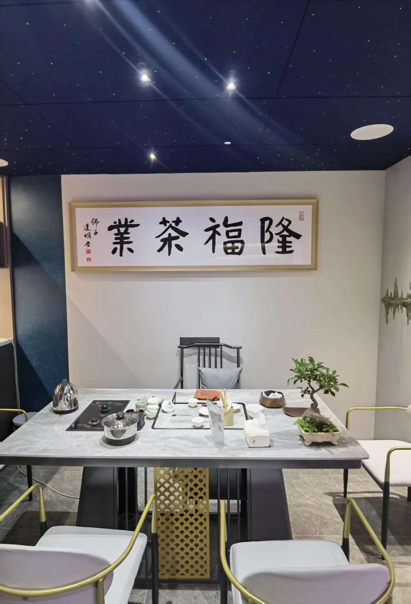

花果香起
店内海报以兰香、蜜韵描绘它的香气层次。

01 / 一款茶的性格
冰岛枞韵
以云南冰岛古树茶为原料，融合凤凰单丛乌龙茶的制作思路。这款茶的故事，从两种茶文化的相遇开始：一边是云南的古树底蕴，一边是潮汕对香气与火候的细致讲究。
店内海报以兰香、蜜韵描绘它的香气层次。
以柔滑、甘甜的口感，表达古树原料的特点。
轻微焙火香与回甘交织，值得慢慢体会。
风味描述整理自店内海报；每批茶与冲泡方式不同，实际感受以品饮为准。
02 / 原料与手艺的相遇
从鲜叶到杯中，香气与滋味，在一道道工序里慢慢成形。
以下为店内海报介绍的工艺脉络，并非全部生产参数。
让鲜叶适度失水，为后续的香气转化作准备。
通过做青环节，塑造乌龙茶工艺中的香气与滋味。
衔接杀青与揉捻，让叶片逐渐形成成茶的形态。
以焙火收尾，呈现海报所描述的焙火香与层次。
03 / 在汕头，留一点时间给茶
一张茶桌，几只茶杯。比起匆匆定义一款茶，我们更希望把它放进一场从容的品饮里。
从第一泡的香气，到杯底留下的余韵；从云南原料，聊到潮汕工艺。让这一盏，成为认识隆福茶业的开始。
查看到店信息 ↗04 / 店里的茶故事
两张店内海报，记录“冰岛枞韵”的产品理念与风味介绍。
原图中的树龄、产区和工艺宣传信息，仍需结合产品资料确认。
来隆福，喝杯茶。
广东省 · 汕头市
详细地址及导航即将补充联系方式即将公布
营业时间、品茶安排请以门店确认为准